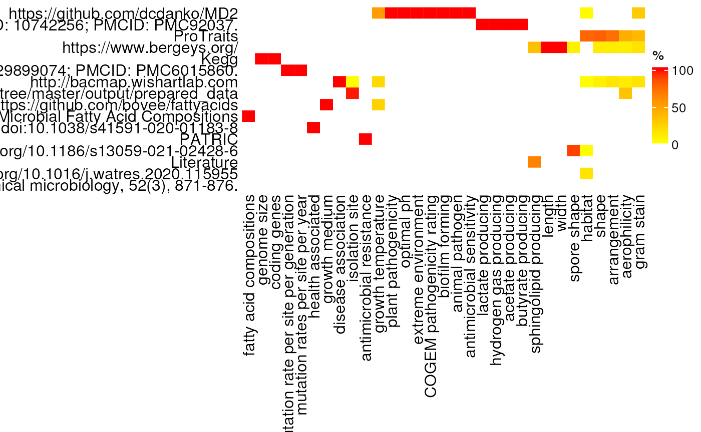

library(bugphyzzAnalyses)
library(bugphyzz)
library(purrr)
library(dplyr)
library(tidyr)
library(tibble)
library(ComplexHeatmap)
phys <- physiologies()
phys$`fatty acid compositions` <- fattyAcidComposition()
phys <- map(phys, as_tibble)Use the ‘Literature’ keyword for all published articles with the
format \\w[0-9]{4}:
phys_sources_mod <- phys |>
map(~{
.x |>
mutate(
Attribute_source = ifelse(
grepl('\\w_[0-9]{4}', Attribute_source),
'Literature',
Attribute_source
)
)
})
sources_tbl <- phys_sources_mod |>
map(~ count(.x, Attribute_source)) |>
bind_rows(.id = 'Attribute')
sources_cat <- sources_tbl |>
select(-n) |>
distinct() |>
arrange(Attribute) |>
group_by(Attribute_source) |>
summarise(
Attributes = paste0(Attribute, collapse = ', ')
) |>
ungroup() |>
rename(Sources = Attribute_source)
createDT(sources_cat)Create count table of all of the attributes
Create count matrix and matrix of proportions for each source and attribute
count_mat <- sources_counts |>
pivot_wider(
names_from = 'Attribute_source', values_from = 'n' , values_fill = 0
) |>
column_to_rownames(var = 'Attribute') |>
as.matrix()
prop_mat <- apply(count_mat, 1, function(x) (x / sum(x) * 100))
Heatmap(
matrix = prop_mat,
show_row_dend = FALSE, show_column_dend = FALSE,
column_names_side = 'bottom', row_names_side = 'left',
name = '%',
col = circlize::colorRamp2(c(0, 1, 100), c("white", 'yellow', "red"))
)